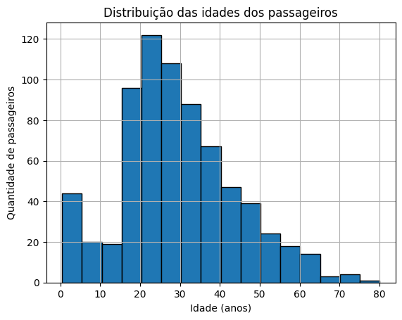
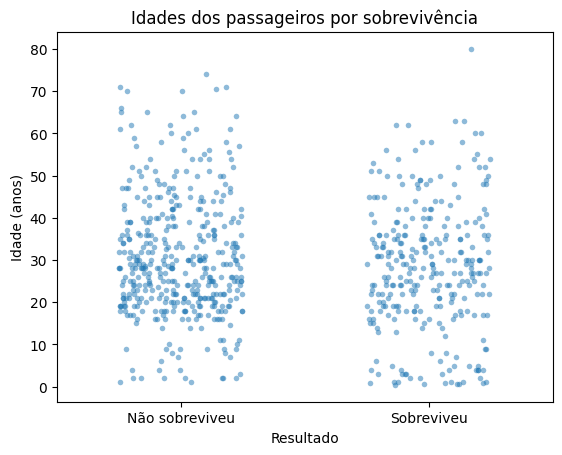
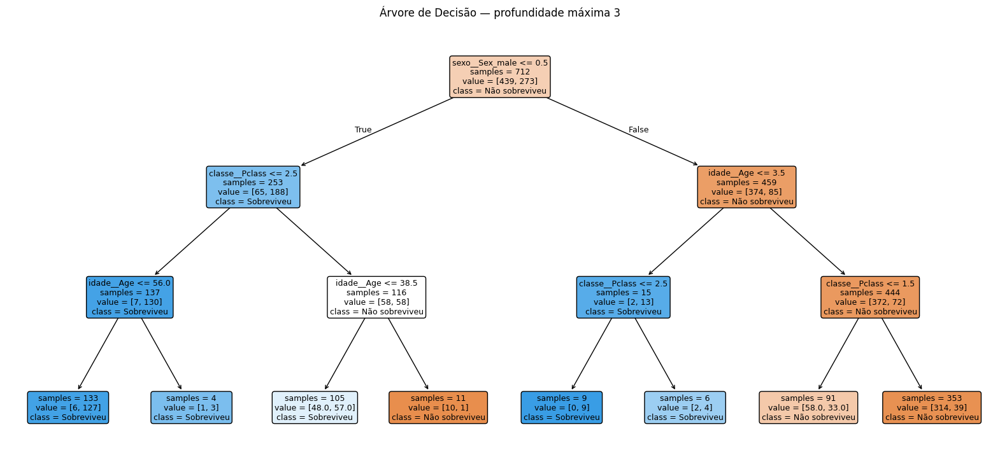

O problema
Muita gente conhece a história do Titanic pelo clássico de James Cameron. Entre romances e tragédias, o filme recria a viagem do navio que partiu de Southampton, na Inglaterra, em 10 de abril de 1912. Com o apoio da inteligência artificial e do machine learning, podemos identificar quais características dos passageiros estiveram associadas à sobrevivência ao naufrágio?
A solução e o processo
Do registro de bordo à previsão
Comecei com uma pergunta simples: entre os 891 passageiros da base, quem sobreviveu? No Google Colab, usei o Pandas para contar os sobreviventes e comparar grupos por idade, sexo e classe da passagem. Depois, treinei dois modelos com essas três características para estimar a chance de sobrevivência de um novo passageiro.
Um dos desafios foi a idade: 177 registros tinham esse campo vazio. Para os gráficos, usei as 714 idades conhecidas. Para treinar o modelo, preenchi as lacunas com a mediana, a idade que fica no meio da lista ordenada. Calculei esse valor dentro de cada etapa de treino.
Checklist de boas práticas aplicadas
- Separar treino e teste. Reservei 712 passageiros para treinar e 179 para avaliar o resultado final. A divisão preservou a proporção de sobreviventes nos dois conjuntos.
- Preparar os dados dentro do treino. Reuni o preenchimento das idades, a conversão do sexo em indicador numérico e o modelo em uma sequência de etapas chamada pipeline. Assim, os dados de teste ficaram fora do cálculo da mediana.
- Comparar nas mesmas condições. Avaliei a regressão logística e a árvore de decisão nas mesmas cinco divisões do treino. Em cada rodada, uma parte ficou reservada para verificar os acertos.
- Usar uma referência simples e examinar os erros. Comparei a árvore com a regra de prever sempre o desfecho mais frequente e contei quantos sobreviventes cada previsão deixou de identificar.
Ver como o modelo foi usado em Python
pipeline_arvore.fit(X_treino, y_treino)
previsoes_arvore_teste = pipeline_arvore.predict(X_teste)
probabilidades_arvore_teste = pipeline_arvore.predict_proba(X_teste)[:, 1]A primeira linha treina a árvore. As duas seguintes produzem a classificação e a chance estimada de sobrevivência para cada passageiro do teste.
Usei Python, Pandas, scikit-learn, Matplotlib e Seaborn no Google Colab, com apoio do Codex na escrita e na revisão do código.
Resultados e visualização
Que idades aparecem na base?

Quem sobreviveu em cada idade?

Entre os passageiros com idade conhecida, 57,4% dos menores de 12 anos sobreviveram, ante 38,9% daqueles com 12 anos ou mais. Escolhi esse corte para explorar os dados. A árvore aprendeu seus próprios limites de idade a partir do treino.
Como a árvore se saiu no teste?
Nas cinco divisões de treino, a árvore acertou em média 81,2% dos casos e a regressão logística, 78,8%. No teste final, a árvore acertou 137 de 179 passageiros (76,5%). A regra de prever sempre “não sobreviveu” acertaria 110 (61,5%). Isso representa 27 acertos adicionais, cerca de 15 pontos percentuais.
| Resultado real | Previu que não sobreviveu | Previu que sobreviveu |
|---|---|---|
| Não sobreviveu | 92 | 18 |
| Sobreviveu | 24 | 45 |
Quando a árvore previu sobrevivência, acertou 45 de 63 vezes (71,4% de precisão). Dos 69 sobreviventes reais, identificou 45 (65,2% de recall). Os outros 24 mostram uma limitação que a taxa geral de acertos sozinha esconde.
De onde vem a chance do personagem?
A árvore faz até três perguntas e chega a um grupo de passageiros do treino. Por exemplo, para uma mulher de 38 anos na primeira classe, a estimativa é de 95,5%: sobreviveram 127 dos 133 passageiros daquele grupo. Alguns grupos têm poucos exemplos. A base cobre apenas parte dos passageiros e das circunstâncias da viagem.
No simulador, essa estimativa dá início ao sorteio. O número da sorte e o signo são regras de ficção que ajustam a chance do personagem no jogo. As métricas acima avaliam a árvore treinada com os dados dos passageiros.
Ver a árvore de decisão completa

Notebook e dados
Você pode consultar aqui a base de dados utilizada neste projeto: Consultar o CSV
Ver análise no GitHub · Abrir no Google Colab